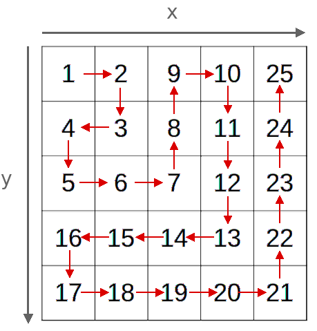

In what concerns the continuous evaluation solving exercises grade during the semester, you should submit until 23:59 of March 31st
(this exercise will still be available for submission after that deadline, but without couting towards your grade)
[to understand the context of this problem, you should read the class #04 exercise sheet]
In this problem you should submit a file containing the function as described (without any main function). Inside the function do not print anything that was not asked!
Hopper has uncovered top-secret blueprints from the Hawkins National Laboratory, but there’s a problem - the data is arranged in an infinite spiral matrix, with numbers arranged in rows and columns. Here are the first five layers of the spiral, starting on cell (1,1):

He believes that if he can determine the exact number at a specific coordinate, he will uncover Dr. Brenner’s next move. Can you help him?
Write a function int spiral_number(int y, int x) that receives a pair of coordinates (y, x) and returns the number at that position in the infinite spiral matrix shown above.
The following limits are guaranteed in all the test cases that will be given to your program:
| 1 ≤ y, x ≤ 40 000 | Coordinates of the number |
You should submit a .c file containing the requested function, without any main function and without printing anything. You can however create additional methods, if you need them.
Mooshak will use the following code to link to your function, read the inputs and call your method, printing its result.
#include <stdio.h> // Forward declaration of function to implement int spiral_number(int, int); int main(void) { // Read the number of queries to make int q; scanf("%d", &q); for (int i=0; i<q; i++) { // for each query, read (y,x) and print the result of calling the function int y, x; scanf("%d %d", &y, &x); printf("spiral_number(%d, %d) = %d\n", y, x, spiral_number(y,x)); } return 0; }
NOTE: the limits are really high and you must have an efficient solution that can compute this quickly.
A solution that simply tries to simulate the spiral number by number will most likely have Time Limit Exceeded.
Your program will need to be able to answer 1000 queries in less than one second.
| Example Input | Example Output |
4 2 3 1 1 4 2 123 456 |
spiral_number(2, 3) = 8 spiral_number(1, 1) = 1 spiral_number(4, 2) = 15 spiral_number(123, 456) = 207148 |